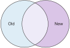

11. Bitcoin upgrades
This chapter covers
-
Understanding hard forks and soft forks
-
Upgrading Bitcoin safely
-
Understanding that users make the rules
To understand this chapter, you should be comfortable with concepts like the blockchain ([ch06]), proof of work ([ch07]), and the peer-to-peer network ([ch08]). If you had difficulties with those chapters, I suggest you revisit them before continuing with this chapter. Of course, you can also just try to read on anyway.
Bitcoin’s consensus rules can change in two ways: via either a soft fork or via a hard fork. These two types of changes are fundamentally different. In Section 11.1, you’ll learn about the differences between hard and soft forks and about what happens when different nodes run different consensus rules. You’ll need to understand this before learning how to safely upgrade Bitcoin’s consensus rules..
Rolling out a consensus rule change over the Bitcoin network can be difficult. Each Bitcoin node is sovereign, and no one dictates what software people should run—users decide for themselves. This makes it hard to roll out, or deploy, consensus rule changes without having broad user and miner support. The deployment mechanisms have evolved over time, and we’ll go through this evolution and explore the current state of deployment mechanisms.
As of this writing, most (noncritical) updates to Bitcoin’s consensus rules have been made via miner-activated soft forks, in which miners signal support and eventually start enforcing the new rules. But this approach presents some issues—for example, a big miner can veto an upgrade despite broad user adoption. People are looking to solve this with user-activated soft forks. This means power is where power belongs: with the people using Bitcoin, the economic majority. It’s the economic majority that ultimately and collectively decides the consensus rules, and this insight is put into practice with user-activated soft forks.
11.1. Bitcoin forks
Open source software is software that you’re free to download, use, inspect, change, and redistribute as you please. A lot of the software you use on a daily basis is probably open source. Maybe you use the Google Chrome web browser or an Android mobile phone. These are examples of software built on open source projects.
Open source projects can be forked. If you make a copy of the source code for Linux, make some changes to it, and distribute your new version of the Linux source code, you have created a fork of the project.
Bitcoin is an open source project that can be forked just like any other open source project, such as Linux. But in this book, fork will mean something different.
In the Bitcoin context, the term fork means a change in the consensus rules. The consensus rules define what a valid blockchain is. When some set of nodes uses the same consensus rules, consensus emerges among them about what the current unspent transaction output (UTXO) set—“who owns what”—is. In short, a fork changes the definition of a valid blockchain.
For example, the rule that limits the block weight to 4,000,000 WU is a consensus rule. Changing that limit would be a fork. But a relay policy that prevents transactions with tiny fees from being relayed isn’t part of the consensus rules. Changing that policy isn’t a fork.
You can change the consensus rules in Bitcoin Core, in a copied version of Bitcoin Core, or in any alternative Bitcoin full-node software program. If someone runs your modified program, that person is running a fork.
We generally categorize forks in Bitcoin as follows (Figure 1):
- Hard forks
-
A hard fork relaxes the consensus rules. Some blocks that was considered invalid by Old nodes, will be considered valid by New nodes. Doubling the maximum allowed block weight would be a hard fork.
- Soft forks
-
A soft fork tightens the consensus rules. All blocks that New nodes consider valid will also be considered valid by Old nodes, but some blocks considered valid by Old nodes will be considered invalid by New nodes. Reducing the maximum allowed block weight would be a soft fork.
Changes that don’t change the consensus rules, such as modifying the color of the graphical user interface or adding a new feature to the peer-to-peer networking protocol, aren’t Bitcoin forks. But they could be considered forks of a software project in the traditional sense. From now on, I’ll use the term fork only to mean a change of consensus rules.
As an analogy for soft and hard forks, imagine a popular vegetarian restaurant where lots of vegetarians go to eat. This restaurant has only one dish on its menu. Think of the restaurant as a miner, the guests as full nodes, and the meals served as blocks. The restaurant produces meals that guests eat—the miner produces blocks that full nodes accept.
Imagine that the restaurant changes its dish, as Table 1 shows.
| Vegetarian restaurant serves … | Will guests accept it? | Fork type | Why |
|---|---|---|---|
Vegetarian food |
Yes |
None |
Vegetarians eat vegetarian food. |
Nonvegetarian food |
no |
Hard fork |
The rules are relaxed. Vegetarians can’t eat here any more. |
Vegan food |
Yes |
Soft fork |
The rules are tightened. Vegetarian rules still apply. |
If you create a fork, soft or hard, you risk having a chain split if anyone runs your forked computer program. Some nodes will follow the strongest chain that’s valid according to the old rules, and some nodes—those running your software—will follow the strongest chain that’s valid according to your new rules. The result might be a split in the blockchain.
We’ll work through a few examples to illustrate what happens in different scenarios. We’ll start with the simplest case: a change that doesn’t affect the consensus rules. The name Bitcoin Old will refer to the previous version of the program, and Bitcoin New will refer to the changed version of the program. A node running Bitcoin Old is called an Old node, and a New node is a node running Bitcoin New. We’ll denote data—for example, a block—created by a New node as a New block. Similarly, a transaction created by an Old node will be denoted as an Old transaction.
11.1.1. Nonconsensus rule changes
Suppose you want to add a new “feature” to Bitcoin Core’s networking
code. You want to add a new network message type called kill that one
Bitcoin node can send to another Bitcoin node. This message’s recipient
node will immediately shut itself down. Only New nodes will know how to
deal with an incoming kill message. Old nodes will ignore the—for
them—unknown message (Figure 2).

Most people consider your change a huge security risk. They don’t want their nodes shut down by a random stranger on the internet. You’ll have a hard time convincing them to use Bitcoin New. You can’t force this software on anyone; people will have to actively want it and install it for Bitcoin New to get network-wide adoption.
Stupid changes like the kill message won’t make it in the world of
open source.
Making something useful instead
Suppose you invent something useful instead: compact blocks. Compact blocks let a peer send a block to another peer, but without sending the full block. Instead, this technique uses the fact that the recipient node has already received most of the transactions in the block. Remember that a transaction first travels the network during transaction propagation, then travels the network again during block propagation once the transaction is confirmed.
When Rashid sends a block to Qi (Figure 3), wouldn’t it be great if the block didn’t have to contain the transactions Qi already has? Bandwidth requirements would drop dramatically.

Rashid can instead send just the block header and a list of txids (Figure 4). Qi can then reconstruct the block from the transactions she already has in memory and the message from Rashid. In case Qi doesn’t have one of the transactions, she’ll request them from Rashid.

The protocol starts with Rashid sending Qi a cmpctblock message. Qi
will use this message to re-create the block using the transactions she
already has in memory. If she succeeds, she’s done and can start
verifying the block. If she’s missing some transactions, she’ll request
them from Rashid using a getblocktxn message containing a list of
those transactions’ indexes. Rashid will then reply with a blocktxn
message containing the missing transactions.
Note that this is a simplified version of how it actually works. The main differences are as follows:
-
The
cmpctblockmessage can also include some complete transactions—for example, the block’s coinbase transaction. -
Compact blocks can work in two different modes:
-
In high-bandwidth mode,
cmpctblockmessages are sent unsolicited instead of first using aninvorheaders. -
In low-bandwidth mode, the
cmpctblockis sent only on request after aninvorheadershas been received.
-
-
The list of txids sent in the
cmpctblockmessages aren’t full txids, but shortened versions to save data traffic. They’re still long enough to almost always uniquely identify the actual transactions used.
This is a really useful change that many people find valuable. You release your software, and people start using it. Not everybody has to upgrade to this version. If only one of your peers uses it, you’ll benefit by running it yourself because the bandwidth requirements between you and that one peer will decrease. As more and more nodes start adopting compact blocks, your total bandwidth requirement will drop even more.
You haven’t made any changes to the consensus rules. Blocks are verified using your software exactly as before. Old nodes will accept New blocks and vice versa.
11.1.2. Hard forks
As described in Section 11.1, a hard fork is a software change that relaxes the consensus rules. New blocks, created by New nodes, might be rejected by Old nodes. In the example with the vegetarian restaurant, a hard fork would be when the vegetarian restaurant starts to serve meat.
Suppose you create a fork that changes the maximum allowed block weight—discussed in [increasing-the-block-size-limit]—from 4,000,000 WU to 8,000,000 WU. This would allow for more transactions to be stuffed into each block. On the other hand, a higher limit could negatively affect some nodes in the Bitcoin network, as we talked about in [ch10].
Anyhow, you make this change and start using it in the Bitcoin network. When your node receives a block from a Bitcoin Old node, you’ll accept it because the block is definitely ≤ 8,000,000 WU; the Old node won’t create or relay blocks larger than 4,000,000 WU.
Suppose you’re a miner running Bitcoin New. You’re lucky enough to find a valid proof of work, and you publish your block. This block will definitely be ≤ 8,000,000 WU, but it might or might not be ≤ 4,000,000 WU. If it is ≤ 4,000,000 WU, it will be accepted by Old nodes. But if not, Old nodes will reject your block. Your blockchain will diverge from the Bitcoin Old blockchain. You’ve caused a blockchain split (Figure 5).
When your New node mines a new block, it might get rejected by the Old nodes, depending on whether it’s ≤ 4,000,000 WU. For the blocks that are rejected, you’ll have wasted a lot of electricity and time mining blocks that don’t make it into the main chain.
But suppose a majority of the hashrate likes your Bitcoin New program and starts using it instead of Bitcoin Old. What happens then? Let’s see how it plays out (Figure 6).
When a New node mines a big block, all New nodes will try to extend that block, but all Old nodes will keep on trying to extend the latest—valid, according to Old rules—block.
New nodes win more blocks over time than Old nodes because they collectively have more hashrate than Old nodes. It seems like the New nodes’ branch will stay intact because it gets a reassuring lead in accumulated proof of work.
New nodes have apparently created a lasting chain split. But if some miners decide to go back to running Bitcoin Old, or if additional miners enter the race using Old nodes so that Old gets a majority of the hashrate again, the New chain might face problems, as Figure 7 shows.

When Old nodes have a hashrate majority, they will outperform the New nodes and eventually catch up with the New nodes and surpass them. New nodes acknowledge this fact by switching back to mining on the Old chain. We say that the branch created by the New nodes was wiped out by a chain reorganization, commonly known as a reorg.
Wipeout protection
Blocks created by Old nodes in the hard fork just described are always compatible with New nodes. This means there is a risk for a reorg of the New chain.
This isn’t the case with all hard forks. Suppose, for example, that you want to change the proof of work hash function from double SHA256 to single SHA256. Your New blocks will always be rejected by Old nodes; and, conversely, Old blocks will always be rejected by New nodes. A change like this is therefore guaranteed to avoid a reorg by the Old branch. It’s wipeout-protected by nature—but many changes aren’t.
An example of a change that isn’t wipeout-protected by nature is an alternative cryptocurrency called Bitcoin Cash. It was created through a hard fork of Bitcoin Core at block height 478559 on 1 August 2017. The main thing Bitcoin Cash did was increase the maximum base block size and remove segwit from the code. This made the Old chain compatible with New nodes and vulnerable to wipeout. To protect against Bitcoin New being wiped out in a reorg, Bitcoin Cash added wipeout protection by requiring the first block of the split to be bigger than 1,000,000 bytes (1 MB). See Figure 8.

The result is that Bitcoin New nodes cannot move back to the Bitcoin Old branch because that branch has a block less than or equal to 1 MB at height 478559.
11.1.3. Soft forks

We’ve discussed soft forks several times throughout this book. A soft fork is a change in the consensus rules in which New blocks are accepted by Old nodes. The consensus rules are tightened. In the case with the vegetarian restaurant, a soft fork would be when the restaurant changes its food to vegan.
Segwit is an example of a soft fork. The change was carefully designed so that Old nodes won’t fail in verifying blocks that contain segwit transactions. All Old nodes will accept any valid New blocks and incorporate them into the blockchain.
On the other hand, an Old node could create a block that isn’t valid according to Bitcoin New. For example, a non-segwit miner could include in its block a transaction that spends a segwit output as if it were an anyone-can-spend output (Figure 9).

Suppose there is only a single miner with a small hashrate running Bitcoin New. Also assume that the Old miners produce a block that’s invalid according to New nodes, as in the earlier example with the non-segwit transaction. The result would be that the Old nodes build a block that’s not accepted by the New miner. The New miner would reject the invalid Old block. This is the point where the blockchain splits in two (Figure 10).

In this situation, the Old chain is at risk of being wiped out by a reorg. Suppose more miners decide to upgrade to Bitcoin New, causing a hashrate majority to support the New blockchain. After a while, we’ll probably see a reorg (Figure 11).

The Bitcoin New branch will become the stronger branch, so the remaining Old miners will abandon their branch and start working on the same branch as the New nodes. But as soon as an Old node creates a block that’s invalid on New nodes, it will lose out on the block reward because it won’t be accepted on the New branch.
11.1.4. Differences between hard and soft forks
Let’s look again at what differentiates soft forks from hard forks, as a general rule:
-
A hard fork relaxes the rules. Increasing the maximum block weight is a hard fork.
-
A soft fork tightens the rules. Segwit is a soft fork.
This is a simple, yet true, distinction. We can summarize the effects of a chain split caused by a hard fork versus a soft fork as follows:
-
Hard fork—The New branch might get wiped out in a reorg. Use wipeout protection to avoid this. The Old branch can’t be wiped out.
-
Soft fork—The Old branch might get wiped out in a reorg. You can’t protect the Old branch from a wipeout because that would make this fork a hard fork. Remember that the definition of a soft fork is that Old nodes accept New blocks.
11.2. Transaction replay
Regardless of what causes a chain split, its effects are the same. Users end up with two versions of their UTXO: one spendable on the Old chain, and one spendable on the New chain. We effectively have two cryptocurrencies, Bitcoin Old and Bitcoin New (Figure 12).

Suppose the chain split in Figure 12 has occurred, and you want to pay for a book at an online bookstore. You want to do this using Bitcoin Old because that’s what the bookstore wants.
You create your transaction and broadcast it. The Old nodes in the network will accept your transaction because you spend a UTXO that exists on those nodes. But your transaction is also valid on New nodes because those nodes have the same UTXOs as well (Figure 13).
If your transaction propagates to both a New miner and an Old miner, it will probably end up in both branches of the blockchain. This isn’t what you intended. Your transactions have been replayed on the Bitcoin New branch (Figure 14).
11.2.1. Replay protection
To protect users against replay during a chain split due to a hard fork, the transaction format on the New chain can be changed in such a way that the transaction is valid on at most one branch.
When Bitcoin Cash did its chain split, it made sure Old transactions weren’t valid on New nodes and New transactions weren’t valid on Old nodes (Figure 15).
To achieve this, a transaction on the New branch must use a new
SIGHASH type, FORKID, in transaction signatures. This type doesn’t
do anything, but using it makes the transaction invalid on the Old chain
and valid on the New chain. If a transaction doesn’t use FORKID, the
transaction is valid on the Old chain and invalid on the New chain.
Using a new SIGHASH type for signatures is, of course, not the only
way to achieve replay protection. Any change that makes transactions
valid on at most one chain will do. You can, for example, require that
New transactions subtract 1 from the input txid. Suppose the UTXO
you want to spend has this txid:
6bde18fff1a6d465de1e88b3e84edfe8db7daa1b1f7b8443965f389d8decac08
If you want to spend the UTXO on the Old chain, you use this hash in the input of your transaction. If you want to spend the UTXO on the New chain, you use this instead:
6bde18fff1a6d465de1e88b3e84edfe8db7daa1b1f7b8443965f389d8decac07
Note that this is just a silly example, not a full-fledged proposal.
11.3. Upgrade mechanisms
All non-urgent upgrades of Bitcoin so far have been made using soft forks. Doing a soft fork safely is a hard problem, and the mechanisms used to do them have evolved over time.
The main worry when doing a soft fork is that the blockchain will split in two and stay that way over a significant time period. If this happened, we would effectively have two cryptocurrencies.
This would cause confusion: Exchanges would need to decide which branch they considered to be “Bitcoin” and which branches to support for their exchange service. Users would need to be made aware that a split had happened so they could avoid sending money on the wrong branch. Merchants would have to make sure they charged the currency or currencies they intended to. A blockchain split might also cause the cryptocurrency value to change dramatically.
11.3.1. Using coinbase signaling—BIP16
When p2sh was introduced in 2012, the Bitcoin community had no
experience in upgrading. It had to come up with a way to avoid a
blockchain split. The community implemented soft-fork signaling
using the coinbase. New miners signaled support for p2sh by putting
the string /P2SH/ into the coinbase of the blocks they produced
(Figure 16).
/P2SH/ in the coinbase’s signature script.On a specific day, the Bitcoin developers checked if at least 550 of
the last 1,000 blocks contained /P2SH/. They did, so the
developers made a new software release that would start enforcing the
p2sh rules on 1 April 2012, a flag day.
This worked out well; miners quickly adopted the soft fork, and the entire network upgraded within a reasonable time. No split occurred because at least 50% of the hashrate had upgraded prior to the flag day.
11.3.2. Using incremented block version number signaling—BIP34, 66, and 65
I haven’t talked about it much before, but the block header comes with a version (Figure 17). This version is encoded in the first 4 bytes before the previous block hash.
The version is the only thing missing from our previous block headers. This is the actual 80-byte Bitcoin block header:
4 bytes version 32 bytes previous block id 32 bytes merkle root 4 bytes timestamp 4 bytes target 4 bytes nonce Total 80 bytes
The block version can be used to signal support for certain new features.
The first soft fork deployment using block-version signaling was done in 2013. This soft fork added a rule that all new blocks must contain the block’s height in their coinbase transaction (Figure 18).

The activation of the soft fork was performed in steps using block-version signaling to avoid a blockchain split:
-
New miners increase the block version from 1 to 2 (Figure 19). Note that this happens gradually as more and more nodes switch to Bitcoin New over time.
Figure 19. Miners that run the soft fork signal support for it by increasing their block version. -
Wait until 750 of the last 1,000 blocks have a version of at least 2. When this threshold is reached, the New miners probably have about 75% of the hashrate.
-
Start rejecting newly produced version 2 blocks that don’t contain the height in the coinbase. These blocks are falsely signaling for BIP34.
-
Wait until 950 of the last 1,000 blocks have version ≥2. When this happens, the New miners have about 95% of the hashrate.
-
Start rejecting all new blocks with version 1. All miners producing version 1 blocks will be losers because 95% of the hashrate rejects those blocks. The hope is that miners that still haven’t upgraded will do so quickly to avoid losing too much money on mining worthless blocks.

During step 1, nothing has changed. Only Bitcoin Old rules are in effect. But when 750 of the last 1,000 blocks have version 2, we enter the next step. Here, nodes running the soft fork start ensuring that every new block of version 2 has the height in the coinbase. If not, the block is dropped. One reason is that nodes might be deliberately or accidentally using block version 2 for other purposes than this soft fork. The 75% rule removes false positives before evaluating the 95% rule.
From this point, some Old miner could cause a chain split by creating a block of version 2 that violates the “height in coinbase” rule (Figure 20).
The Old miners would build on top of that block, whereas the New miners would build on top of the previous block. But the New miners probably—depending on the amount of “false” version 2 signaling—have more hashrate and will outperform the Old miners and wipe out the Bitcoin Old branch.
When a greater portion of the blocks—95% of the last 1,000—signals support with version 2 blocks, we enter the last step, step 5. From this point forward, all blocks with versions < 2 will be dropped.
Why did we go through these stages? It isn’t entirely clear why the 75% rule was used, but it does remove false positives, as described. The deployment might have worked fine with the 95% rule only. We won’t explore the rationale behind the 75% rule—just accept that it was used for this deployment and a few others. Table 2 lists soft forks that were introduced using this mechanism.
| BIP | Name | Date | Block version |
|---|---|---|---|
BIP34 |
Block v2, Height in Coinbase |
March 2013 |
2 |
BIP66 |
Strict DER Encoding |
July 2015 |
3 |
BIP65 |
OP_CHECKLOCKTIMEVERIFY |
December 2015 |
4 |
The upgrade mechanism just described is called a miner-activated soft fork. The miners start enforcing the new rules, and all or most full nodes will follow because the New blocks are accepted by both Old and New full nodes.
11.3.3. Using block version bits signaling—BIP9
Bitcoin’s developers collected a lot of experience from previous soft forks. A few problems needed to be addressed:
-
You can only deploy one soft fork at a time.
-
Used block versions can’t be reused for new purposes.
The most annoying problem is that you can’t roll out multiple soft forks at once. This is because previous deployment mechanisms, such as the one used for BIP34, checked whether a block version was greater than or equal to a certain number, for example, 2.
Suppose you wanted to deploy both BIP34 and BIP66 simultaneously. BIP34 would use block version 2, and BIP66 would use block version 3. This would mean you couldn’t selectively signal support for only BIP66; you’d also have to signal support for BIP34 because your block’s version 3 is greater than or equal to 2.
The developers came up with a bitcoin improvement proposal, BIP9, that describes a process for how to deploy several soft forks simultaneously.
This process also uses the block version, but in a different way. The
developers decided to change the way block version bytes are
interpreted. Block versions that have the top 3 bits set to exactly
001 are treated differently.
First, all such block versions are greater than 4 because the smallest
such block version is 20000000, which is a lot bigger than
00000004. So, blocks using BIP9 will always support the
already-deployed BIP34, 66, and 65. Good.
Next, the 29 bits to the right of the leftmost 001 bits can be used
to signal support for at most 29 simultaneous soft forks. Each of the
29 rightmost version bits can be used to independently deploy a single
feature or group of features (Figure 21). If a bit is set to 1,
then the miner that produced the block supports the feature
represented by that bit number.

Several parameters need to be defined for each deployable feature:
-
Name—A short but descriptive name for the feature
-
Bit—The number of the bit to use for signaling
-
Start time—What time to start monitoring for miner support
-
Timeout—A time when the deployment will be considered failed
The deployment goes through a number of states (see Figure 22). The state is updated after each retarget period.
-
DEFINED—The starting state. It means a retarget hasn’t yet happened after the start time. -
STARTED—Wait until at least 1,916 (95%) blocks in the last retarget period signal support. -
LOCKED_IN—A grace period to give the remaining nonsignaling miners a chance to upgrade. If they don’t, their blocks might be rejected.
-
ACTIVE—The new rules are in effect. -
FAILED—The timeout occurred before the deployment gotLOCKED_IN. If conditions happen simultaneously, timeout has precedence over other conditions, such as the 95% rule.
When the deployment is ACTIVE or FAILED, the bit used to signal
support should be reset to 0 so that it can then be reused for other
deployments.
11.3.4. Using BIP9 to deploy relative lock time
Let’s look at an example of how a deployment using version bits can play out. We’ll look at how relative lock time was deployed. The developers of this new feature defined the following BIP9 parameters:
name: csv bit: 0 start time: 2016-05-01 00:00:00 timeout: 2017-05-01 00:00:00
The timeout was one year after the start time, which gave the miners about one year to upgrade to the soft fork implementing this feature.
Figure 23 shows the state transitions that occurred.

csv. It went well.This deployment went quickly and smoothly. It took only three retarget periods for 95% of the miners to upgrade to the new software.
Unfortunately, all deployments aren’t as smooth.
11.3.5. Using BIP9 to deploy segwit
Segwit, described in [ch10], also used BIP9 for its deployment, but
things didn’t work out as anticipated. It started out the same way
csv deployment did. The parameters selected for this deployment were
as follows:
name: segwit bit: 1 start time: 2016-11-15 00:00:00 timeout: 2017-11-15 00:00:00
A new version of Bitcoin Core was released with these segwit
deployment parameters. Users adopted this new version pretty quickly,
but for some reason, miners seemed hesitant. The signaling plateaued
at around 30%, and the deployment process got stuck in the STARTED
state, as Figure 24 shows.
The segwit deployment was at risk of failing—entering the FAILED state
after timeout. If this happens, a whole new deployment cycle must be put
in place and executed, which could take another year.
Conflicts of interest
Another proposal was discussed in parallel. This proposal was known as Segwit2x. It was a proposal to first activate segwit and then increase the maximum block weight via a hard fork, in addition to the maximum block size increase segwit itself provides. This proposal would use BIP9 with version bit 4 to signal support. Bitcoin Core didn’t show any interest in this proposal, but the Bitcoin Core software repository was copied under the name btc1 by a group of people who used it to implement the proposal. The threshold would be 80% of the last 2,016 blocks to lock in segwit. This proposal got a lot of traction among miners.
A discrepancy seemed to exist between what full nodes wanted and what miners wanted. Rumors and theories floated around about what caused this discrepancy. We won’t go into that here, but will stick to what we know.
A user-activated soft fork
In the midst of all this, another proposal, BIP148, surfaced that would start dropping blocks that didn’t signal bit 1 (segwit) on 1 August 2017. The effect would be that nodes running BIP148 would experience a 100% adoption of BIP141, which would cause BIP141 to lock in after at most two retargets. This is what’s known as a user-activated soft fork. Users—those running full nodes—collectively decide that they’ll start applying new rules, and if miners don’t comply, their blocks will be discarded. We’ll talk a bit more about user-activated soft forks toward the end of this chapter.
BIP148 was an attempt at forcing segwit deployment despite hesitant miners.
Some groups, especially the Bitcoin Core team, thought this proposal was too risky. It would cause a chain split if a miner published a non-segwit-signalling block. But there was also a group of people wanting to move forward with BIP148 regardless. This caused some worry in the Bitcoin community.
A proposal to bridge the groups

We had a stalled segwit deployment, an alternate segwit2x fork coming that many miners seemed to want, and a group of impatient users wanting to enforce segwit using BIP148.
To avoid a timeout of the segwit deployment—which would further delay segwit—and to avoid a possible blockchain split by BIP148, and to please the segwit2x crowd, a new BIP was written. BIP91 would satisfy all of these groups. It would use BIP9 with a custom threshold:
name: segsignal bit: 4 start time: 2017-06-01 00:00:00 timeout: 2017-11-15 00:00:00 Period: 336 blocks Threshold: 269 blocks (80%) Ceases to be active when segwit (bit 1) is LOCKED_IN or FAILED.
This BIP did things a bit differently than normal BIP9 deployments. It used a shorter period—336 blocks instead of 2,016 blocks—and a lower threshold—80% instead of 95%.
While active, this BIP behaved like BIP148. All blocks that didn’t signal bit 1 (segwit) were rejected. Note how this was compatible with both BIP148 and segwit2x. It signaled using bit 4, the same bit segwit2x would use, and it enforced segwit lock-in by rejecting non-bit-1-signaling blocks.
This BIP wasn’t implemented in Bitcoin Core, but in a copied version of
Bitcoin Core. This version quickly got broad adoption among miners, and
on 21 July 2017, the BIP got LOCKED_IN. See Figure 25.
It activated three days after LOCKED_IN. Note that it was mainly
miners that adopted BIP91. Normal users typically used Bitcoin Core,
which didn’t implement BIP91.
When miners activated BIP91, they started dropping blocks that didn’t
signal bit 1, which is the bit for the segwit deployment. The result
was that non-bit-1 blocks didn’t make it into the strongest chain, which
quickly forced the remaining miners to upgrade to segwit to avoid mining
invalid blocks.
Miners were starting to signal segwit, the original segwit proposal
using bit 1 for its deployment, and it got LOCKED_IN on 9 August 2017
and became ACTIVE on 24 August 2017, as Figure 26 shows.

Normal nonmining users, merchants, and exchanges didn’t have to do
anything in particular to stay on the strongest chain because their
software (normal segwit-enabled software) follows the strongest valid
chain. This meant BIP141 got LOCKED_IN and then ACTIVE for all users
and miners at the same time.
Lessons learned
The events that occurred during segwit deployment weren’t anticipated. Few people thought that miners would refuse to adopt BIP141. Yet that’s what happened.
It became clear that BIP9 isn’t an ideal way to deploy a soft fork. It gives 5% of the hashrate a veto against it. Given that several miners each control more than 5% of the total hashrate, any one of those individual entities can block a system upgrade.
As noted in [trust-in-lisa], we pay miners to perform correct, honest transaction confirmations. We don’t pay them to decide the rules, we pay them to follow the rules. The rules are decided collectively by everyone, you and me, by running our Bitcoin software of choice.
Think about that.
11.3.6. User-activated soft forks
To underscore the importance of the economic majority (you, me, and everyone else using Bitcoin), and to avoid having miners vetoing proposals that the economic majority wants, people started thinking more about user-activated soft forks.
Let’s look at a fictitious example of a user-activated soft fork.
Suppose 99% of Bitcoin users (end users, exchanges, merchants, and so on) want a rule change—for example, smaller blocks—that would be a soft fork. Also suppose no miner wants smaller blocks, so they all refuse to comply. Assume also that 99% of the nonmining full nodes change their software to reject all big blocks after a certain block height.
What will happen when that block height passes? Miners that produce big blocks will build a blockchain that users will deem invalid (Figure 27).
The value of the block rewards in the “miner” chain will be unknown because the exchanges don’t deal with the miner chain. Miners won’t be able to exchange their block rewards to pay their electricity bills. Even if the electricity provider takes Bitcoin, the miners won’t be able to pay with their block rewards because the electricity provider won’t accept the miner’s blocks as valid. The electricity provider is also a Bitcoin user, remember?
But if a single miner decides to comply with users’ demands, the blocks that miner produces will be the only blocks users actually accept (Figure 28).
This single miner will be rewarded for the block it created because the economic majority accepts the block. The blocks on the miner (big-block) chain are still pretty worthless because no users accept them. On top of this, the single small-block miner will be able to charge more fees than before because the total amount of block space is smaller—both because the maximum block weight is smaller and because the total number of blocks is smaller.
Some more big-block miners will probably realize they’re quickly running out of money and decide to switch to the user-accepted branch (Figure 29).
When more miners move over to the users’ branch, that branch will eventually grow stronger than the big-blocks branch. When this happens, the big-blocks branch will get wiped out (Figure 30), and the remaining miners will automatically switch to the small-blocks branch because the change is a soft fork.
Users win.
One of the first soft forks in Bitcoin, the deployment of BIP16 (p2sh), was a user-activated soft fork. The deployment was manual in the sense that developers, on a specific day, manually counted the number of blocks that signaled support and then decided on a flag day that they put in the next release of the Bitcoin software. After this date, all blocks that didn’t comply with the new rules were rejected by nodes running this software.
To use the insights from the recent segwit deployment, a new deployment
mechanism is in the making as of this writing. It’s generally called a
user-activated soft fork. The idea is to start with a BIP9-like
deployment, but with the exception that if the deployment doesn’t get
LOCKED_IN well before the timeout, blocks that don’t signal for the
fork will be dropped. This will effectively cause 100% support because
noncompliant blocks won’t count anymore, and the deployment will soon
get LOCKED_IN.
11.4. Recap
This chapter has taught you about hard forks and soft forks, and how to deploy soft forks without splitting the blockchain. We’ve talked about several miner-activated soft forks and a few user-activated soft forks.
We can illustrate hard forks and soft forks as shown here.
In a hard fork, the rules are relaxed so that a New block might be invalid according to Old rules. In the event of a blockchain split, the New branch might get wiped out by the Old branch.
In a soft fork, the rules are tightened. Old blocks might be invalid according to New rules. In case of a blockchain split, the Old branch risks a wipeout.
You can protect a hard fork against a wipeout by deliberately making the New branch incompatible with the Old branch. For example, Bitcoin Cash requires the first block after the split to have a base size > 1,000,000 bytes, which is invalid according to the Old rules. You can’t protect the Old branch in a soft fork from wipeout.
To roll out a soft fork, care must be taken not to split the blockchain. If a split happens, and both branches remain active over a significant amount of time, it will cause a lot of pain for users, exchanges, miners, and so on.
In a miner-activated soft fork, miners signal their support; when, for example, 95% of the blocks signal support, the new rules start being enforced after a grace period. BIP9 standardized this process.

In a user-activated soft fork, users start enforcing the rules on a specific day (or block height). A standard for this is being developed as of this writing, and it will probably be a hybrid of BIP9 and user-activated soft fork.

The difference from a pure BIP9 deployment is that the user-activated
soft fork process is guaranteed to proceed to ACTIVE once the node has
entered the STARTED state. In the STARTED state, miners have a
chance to move the deployment to a LOCKED_IN state; but if they don’t,
and the timeout has passed, then the supporting full nodes (including
miners that support the upgrade) will start enforcing the rules anyway.
A user-activated soft fork was used to deploy BIP16, p2sh, but it was done manually. Other than this, the community has no real-world experience with user-activated soft forks.
11.5. Exercises
11.5.1. Warm up
-
A soft fork is a change of the consensus rules, but what characterizes the changes made in a soft fork?
-
Suppose a hard fork causes a blockchain split, and the New branch has 51% of the hashrate. Furthermore, suppose the hashrate on the New branch drops to about 45%.
-
What event will eventually happen?
-
Why did I say that the event will eventually happen? When does the event occur?
-
What can the developers of Bitcoin New do to prevent the event from happening?
-
-
Suppose an Old node causes a blockchain split due to a soft fork in which 80% of the hashrate runs Bitcoin New. Will the Old branch of the split last long? Explain your answer.
-
Suppose you try to deploy a soft fork using BIP9. Your deployment has just reached the
LOCKED_INstate. How long do you have to wait before your rules start being enforced?
11.5.2. Dig in
-
Suppose a fork changes the consensus rules such that Old nodes can create blocks invalid to New nodes, and New nodes can create blocks invalid to Old nodes.
What nodes (New, Old, both, or none), would be able to cause a blockchain split when this fork is deployed?
-
Why is it desirable to have a reassuring majority of the hashrate supporting Bitcoin New in a soft fork before starting to enforce the New rules?
-
Suppose a hard fork has caused a permanent blockchain split and you’re about to make a payment using Bitcoin New. Why is replay protection desirable in this scenario?
-
Suppose you want to deploy a soft fork using BIP9 with the following parameters:
bit: 12 start time: 2027-01-01 00:00:00 timeout: 2028-01-01 00:00:00
Also assume that the deployment is in
STARTEDstate, all 2016 blocks in the current retarget period have been mined, and all of them signal support using bit 12. The last (2016th) block, B1, in the current retarget period has the following properties:timestamp T1: 2027-12-31 23:59:59 median time past MTP1: 2027-12-31 23:59:58
Will this deployment eventually get to the
ACTIVEstate? -
Suppose you want to make a user-activated soft fork. You find it hard to convince other users to install your software. What would happen on the flag day if just a small percentage (<30%) of the economy chose to run your software?
-
Suppose you want to make a user-activated soft fork. Lots of other users seem to like your soft fork. Say that 80% of the economy installs your fork. Why would miners (even those that don’t like your change) probably switch to the New rules during this user-activated soft fork?
-
In the previous exercise, your soft fork had support from 80% of the economy. Suppose also that a majority of the hashrate decides to follow your New rules. What happens with the nonmining nodes that don’t run your fork?
11.6. Summary
-
You don’t want a blockchain split when deploying a fork because this would cause disruption in the Bitcoin economy.
-
A hard fork is a consensus rule change that requires every miner to upgrade. Otherwise, the blockchain will split.
-
A soft fork is a consensus rule change that doesn’t require simultaneous upgrade of the entire network.
-
During a blockchain split due to a hard fork, you want wipeout protection to make sure the New branch isn’t reorged by Old nodes.
-
In a blockchain split, you want replay protection to let you select what branch your transactions are applied to.
-
A miner-activated soft fork—for example, one using BIP9 for deployment—lets miners deploy a noncontroversial soft fork.
-
A user-activated soft fork lets users enforce a soft fork deployment. If a hashrate majority eventually follows, the soft fork succeeds without a lasting blockchain split.